Design for iOS and Android, 2026-09-24 (round 6: between the quietest round and the one before). Mockups are generated references, not built UI; small text errors in them are listed under each screen. Earlier rounds: history.html.
| Token | Dark | Light | Replaces today |
|---|---|---|---|
| background | #121314 | #FFFFFF | theme chatgpt-dark / codex-light defaults |
| raised | #1A1B1D | #F3F3F4 | surface, surfaceLight, codeBackground |
| text | #E6E6E6 | #141414 | textPrimary, textBody |
| meta | #7D8085 | #7A7A7F | textSecondary, textMuted |
| user rule | #34363A, 2pt | #D4D4D8 | accent user bubble |
| warn / error word | #C9A04A / #D0605A | #A67C1E / #C0443C | warning, danger |
| body | SF Pro 17 regular, line height ~1.45 (Dynamic Type .body, no −1) | 16pt, default line height | |
| meta text | Berkeley Mono 13, lowercase | 9–13pt mixed, 154 fixed 9–11pt call sites | |
| titles | nav 17 semibold; page 28 semibold; hero 24 semibold | mixed | |
| turn divider | #1E1F21, 1pt | #EDEDEF | none |
| spacing | 4 / 8 / 12 / 20 / 32; margins 20; rows ~62; between turns 32 | inline numbers, rows 3–12pt padding, turns 10 | |
| radius | raised 14; sheet top 16; composer 26 | mixed | |
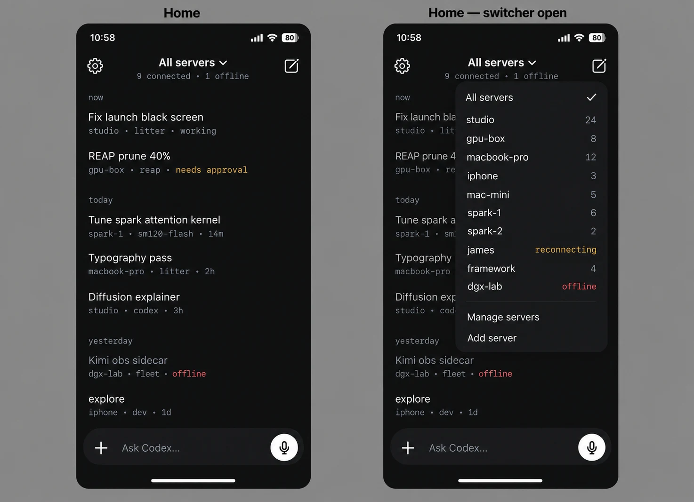
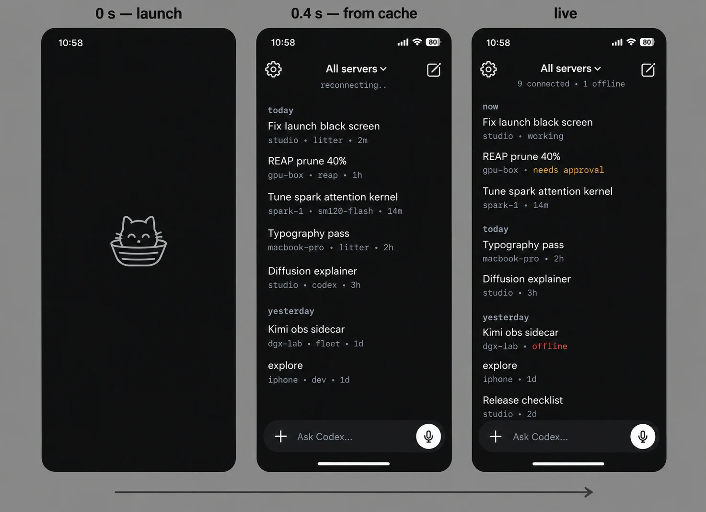
Fix in mockup: the live frame drops the project from some metadata lines ("spark-1 · 14m"); it should match the home screen ("spark-1 · sm120-flash · 14m").
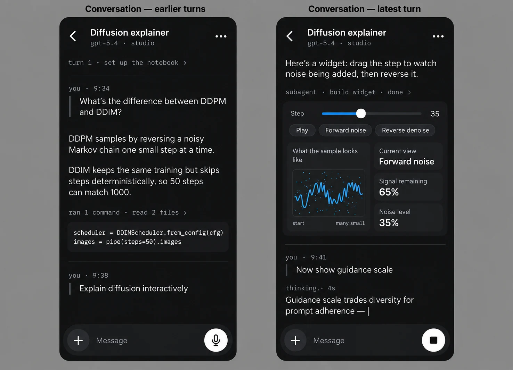
Fix in mockup: the code reads frem_config; it should be from_config (correct in the light-mode image).
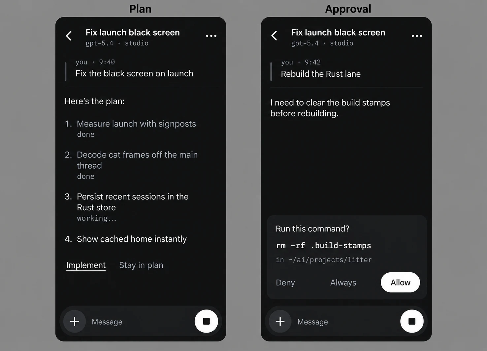
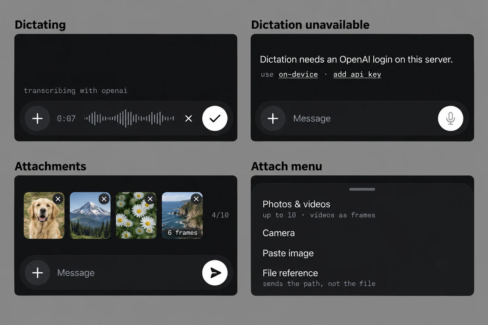
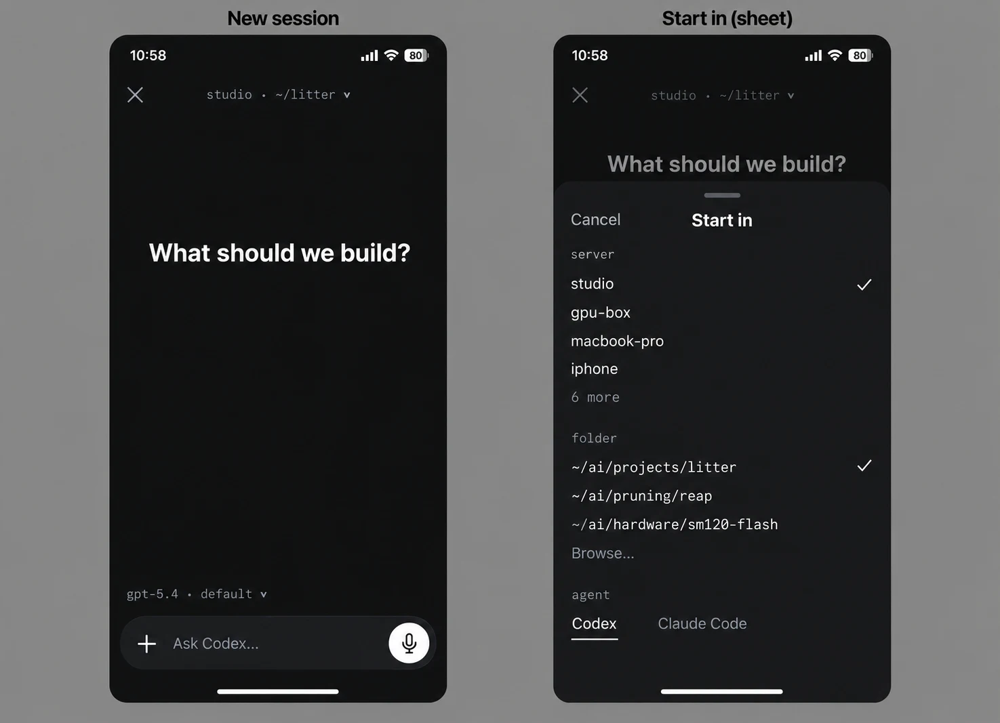
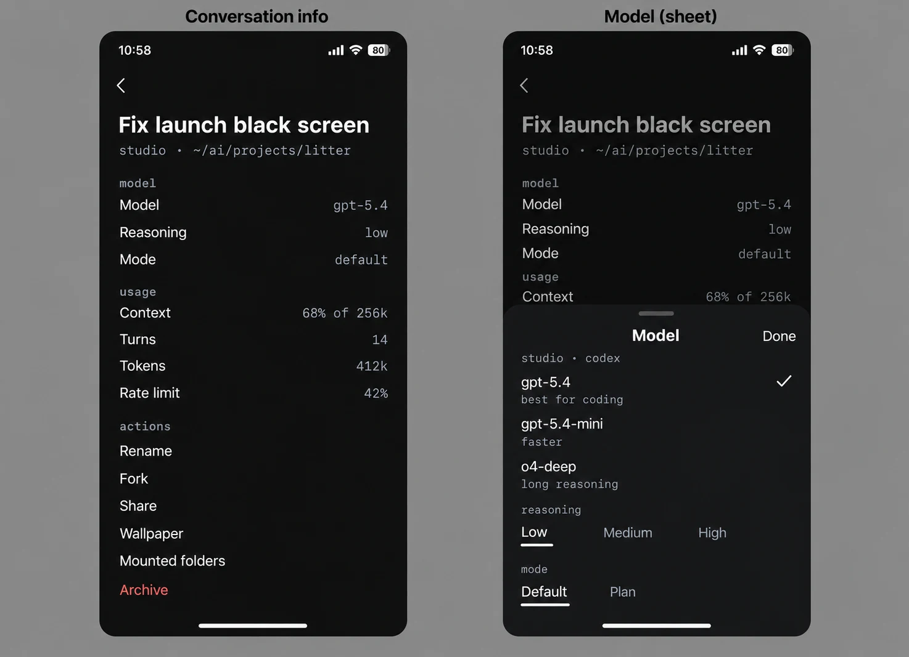
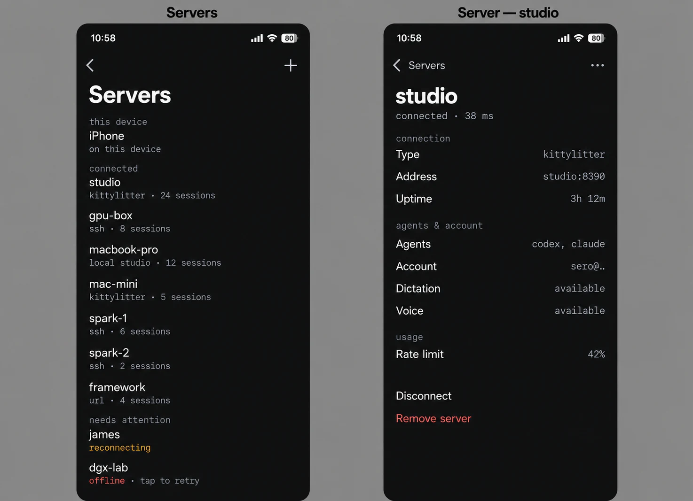
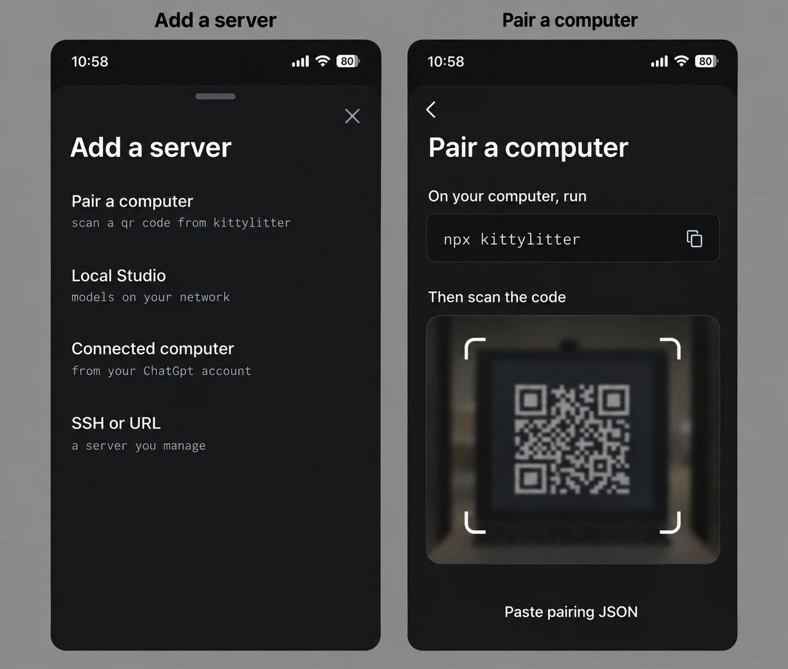
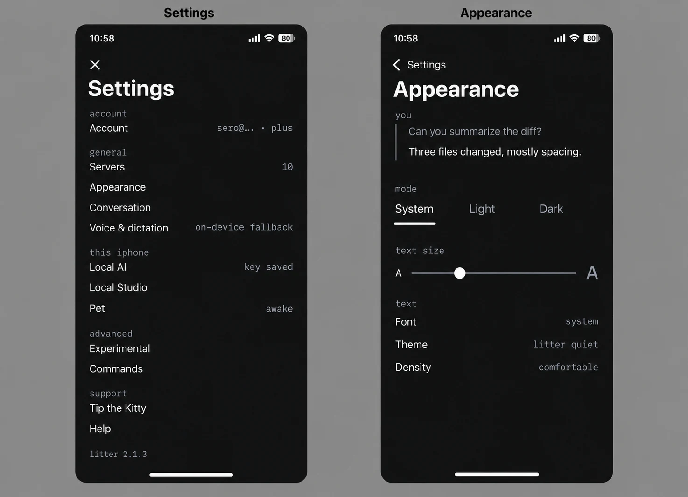
Fix in mockup: in the Appearance preview the assistant line sits inside the user rule; it should be outside it, with no rule. The "account" label above the Account row is redundant.
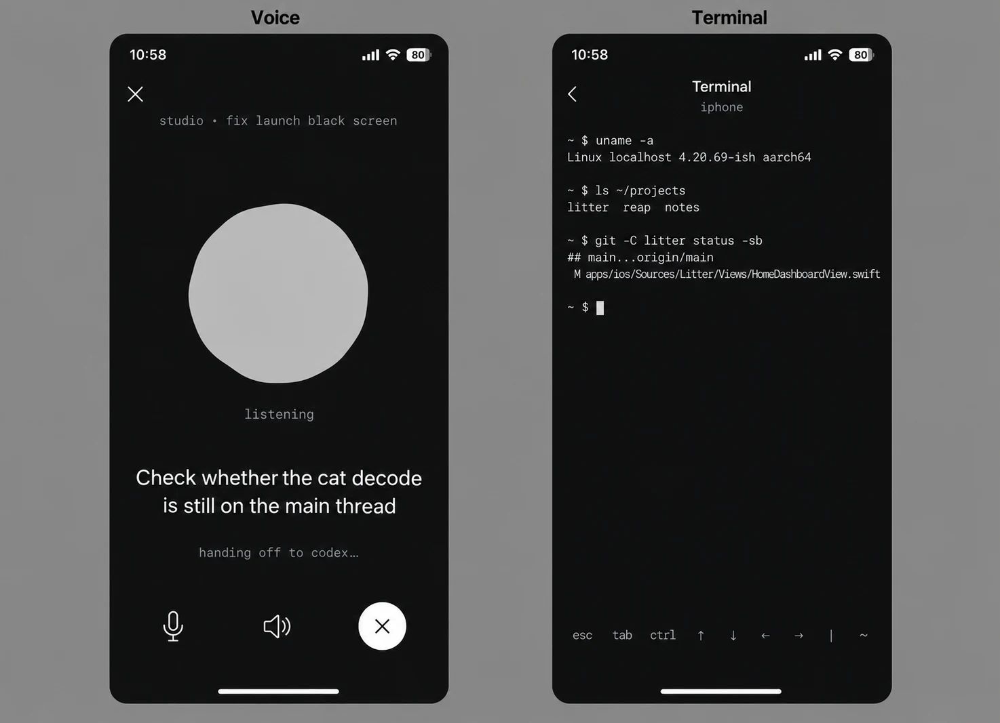
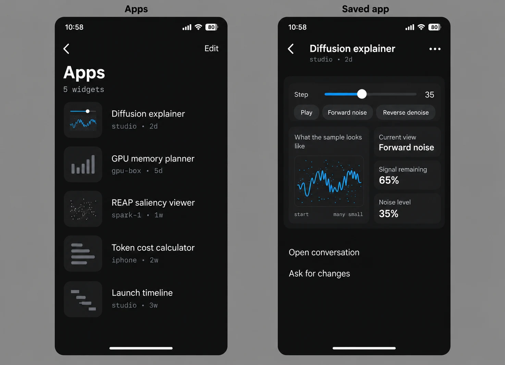
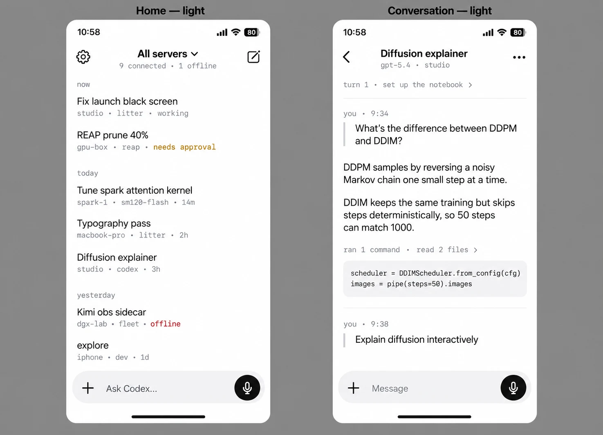
| Problem | Cause found in code | Change |
|---|---|---|
| ~30 s black screen at launch | AlphaAnimatedImageView.animation(from:) decodes all 165 frames of home_cat_entrance.webp on the main thread; the cat mounts on every cold start because no snapshot yet is treated as no sessions. Not yet confirmed on device. | Signpost first; decode off the main thread; show the cat only when sessions are known empty; persist recent sessions in the Rust store and render from cache. |
| Dictation "does nothing" | Errors (no login token, HTTP failure, too short) are stored in VoiceTranscriptionManager.error and never shown, on both platforms. | Transcription as one Rust AppClient call with typed errors; check the token before recording; show the reason inline; optional on-device fallback. |
| Images and video unclear | iOS: 10 images, extras dropped silently. Android: 1 image. No video on either; "files" send a path as text. | 10 on both with a counter; same resize rules; video as 6–10 frames; label files as references. |
| Tight, monospace feel | 16pt body, default line height, 10pt turn spacing, many 9–11pt labels, Berkeley Mono selectable for all text. | Tokens above; Berkeley Mono for metadata only. |